말로 만드는 단축어
진행자가 이번 업데이트에서 가장 멋지다고 꼽은 기능이에요. 단축어 앱에서 플러스를 누르고, 하고 싶은 동작을 평소 말하듯 설명하면 단축어가 저절로 만들어져요. 글로 써도 되고 음성으로 말해도 돼요.
영상에서는 '내가 선택한 사진을 에어드롭으로 보낼 때 JPG로 확장자 변환해 줘'라고 말했어요. 그러자 사진 선택, JPEG로 변환, AirDrop으로 공유까지 세 단계짜리 단축어가 바로 생겼어요. 고양이 사진 몇 장을 골라 실행하니, 맥북에 도착한 사진이 모두 JPG로 바뀌어 있었어요.
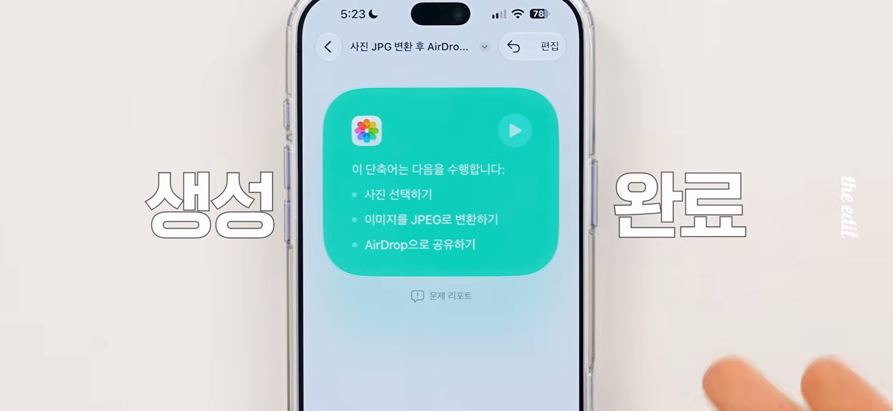
만든 뒤에도 말로 고쳐요
결과가 마음에 안 들면 직접 블록을 만질 필요 없이 다시 말로 고치면 돼요. 영상에서는 '에어드롭하고 나서 원본 사진은 모두 삭제해 줘'를 덧붙였어요. 그러자 마지막에 원본 삭제 단계가 붙었어요. 실행하면 변환과 전송을 마친 뒤, 원본을 지울지 한 번 물어봐요.
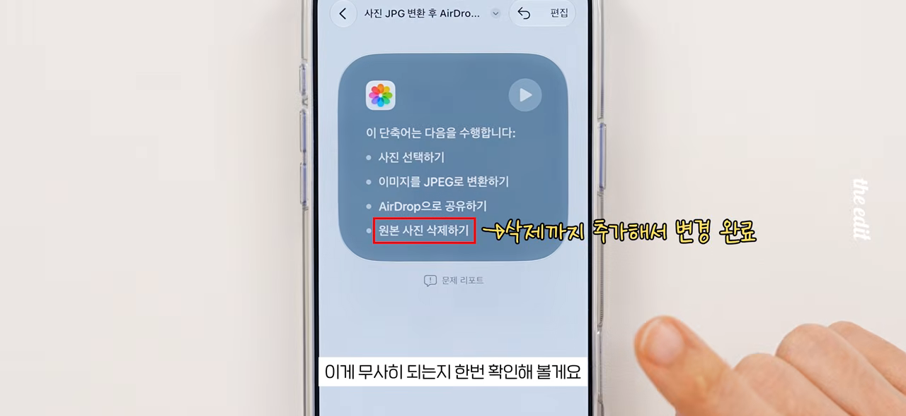
알람 음량과 사진 앱의 변화
알람·타이머 음량을 따로
지금까지는 알람 소리가 벨소리 음량을 따라갔어요. 이제 설정 → 사운드 및 햅틱에서 '벨소리 음량에 맞추기'를 끄면 알람과 타이머만 따로 맞출 수 있어요.
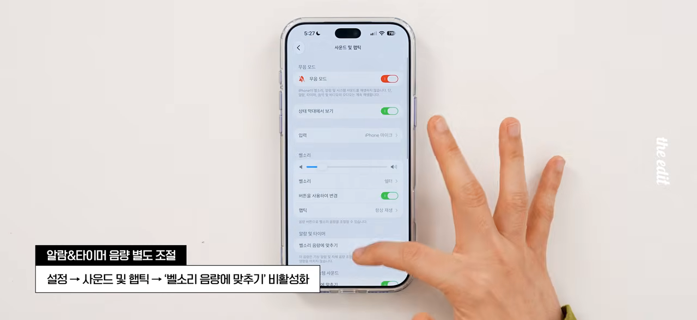
동영상 한 장면을 사진으로
사진 앱에서 동영상을 재생하다 원하는 장면에서 멈추고, 오른쪽 위 '…' 버튼 → '비디오 프레임을 사진으로 저장'을 누르면 돼요. 그 장면이 사진 한 장으로 앨범에 들어가요. 진행자는 쇼츠 썸네일을 고를 때 쓸 만하다고 했고, 갤럭시에서는 진작 되던 기능이라며 농담도 했어요.
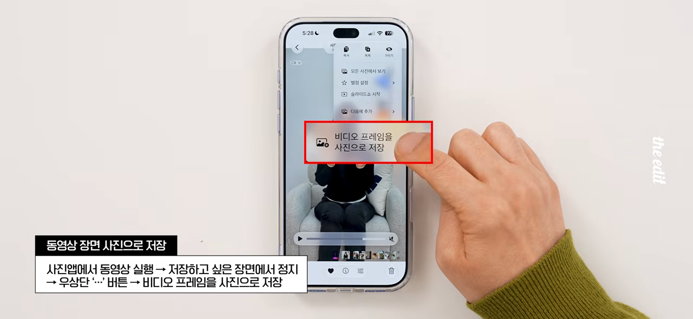
별점과 키워드로 정리하기
사진 앱에 사진을 분류하는 도구가 두 가지 생겼어요. 진행자는 아이폰 사진 검색이 아직 시원찮아서 이런 기능을 넣은 것 같다고 봤어요.
| 기능 | 켜는 곳 / 붙이는 법 | 모아 보는 법 |
|---|---|---|
| 별점 | 모음 탭 → 애플 계정 아이콘 → '별점 제어 항목 보기' 켜기. 사진 오른쪽 위 별 아이콘을 눌러 1~5점 | 보관함 → 정렬 및 필터 → 평가 → 별 개수 선택 |
| 키워드 | 사진을 위로 쓸어 올리기 → '키워드 추가' | 모음 탭 → 애플 계정 아이콘 → 키워드 관리에서 즐겨찾기 등록 → 정렬 및 필터 → 키워드 |
진행자는 별점을 사진 품질이 아니라 음식 맛으로 매겨 두었어요. 비슷한 사진을 여러 장 찍었을 때 베스트 컷을 고르는 데에도 쓸 수 있어요. 키워드는 즐겨찾기까지 해 둬야 필터 메뉴에 떠서, 쓸모는 있지만 손이 좀 간다는 평이었어요.
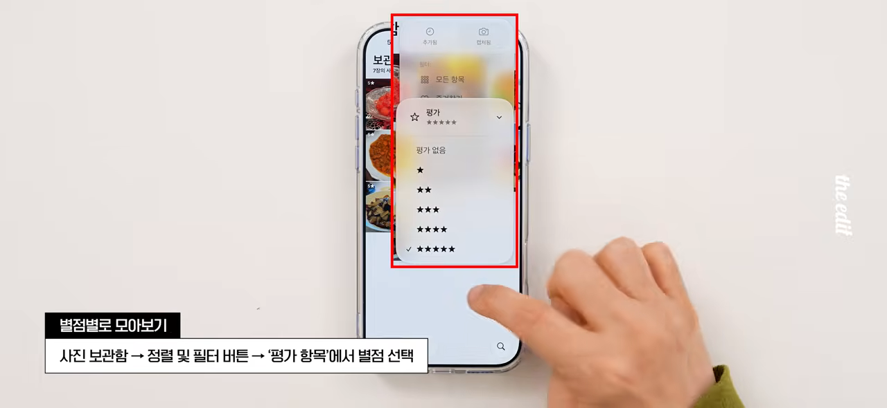
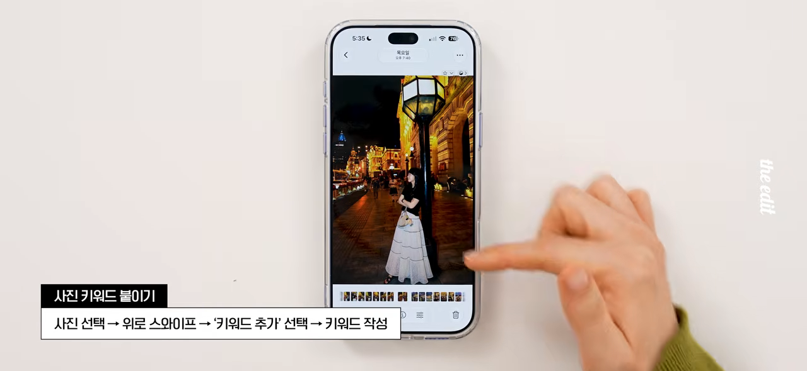
직접 찍은 사진만 모아 보기
모음 탭을 쭉 내려 '기타'를 펼치면 '내가 캡처함'이 생겼어요. 스크린샷이나 다운로드한 이미지는 빼고, 카메라로 직접 찍은 사진만 보여 줘요.
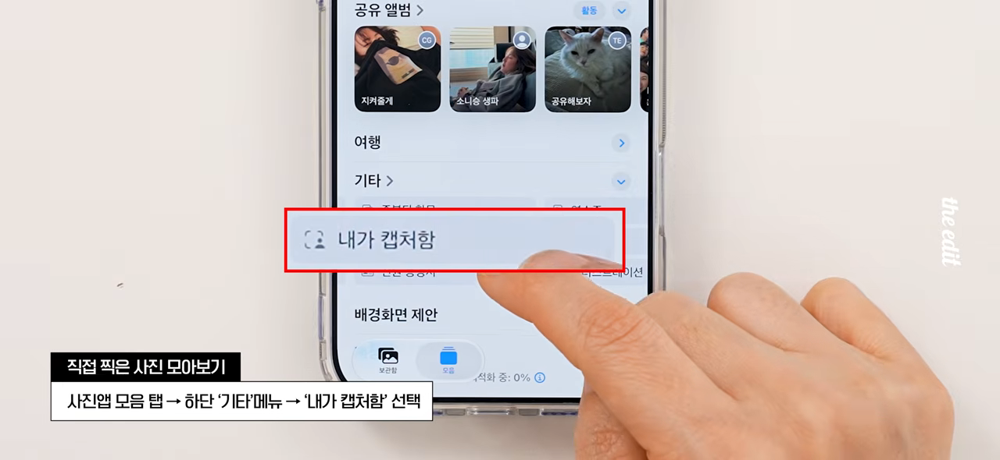
30일짜리 임시 공유 앨범
모음 탭 → 공유 앨범 → 추가에서 새 앨범을 만들 때 '임시 앨범으로 설정'을 켜면, 그 앨범은 30일 동안만 유지돼요. 여행 사진을 잠깐 나눌 때 맞는 기능이에요. 공유 옵션에서 '해당 링크를 가진 누구나'를 고르면 안드로이드나 윈도우 사용자도 링크로 들어올 수 있어요.
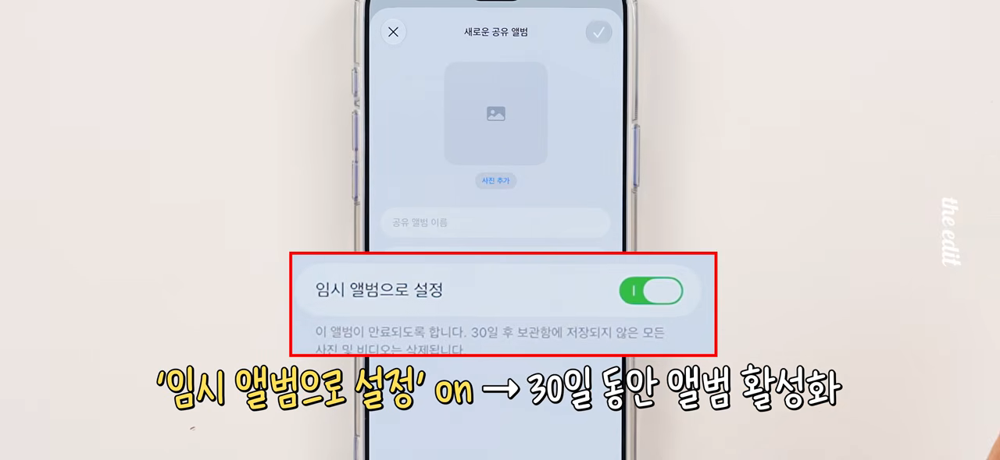
카메라와 화면을 내 취향대로
카메라 도구를 위에 고정
카메라 앱 위쪽 아이콘 줄을 길게 누르면 '사진 제어 항목 추가'가 열려요. 여기서 고른 항목은 최대 8개까지 화면 위쪽에 고정돼요. 조리개, 셔터 속도, 포맷, 야간 모드처럼 자주 바꾸는 것을 올려 두면 찍을 때 메뉴를 뒤질 일이 줄어요.
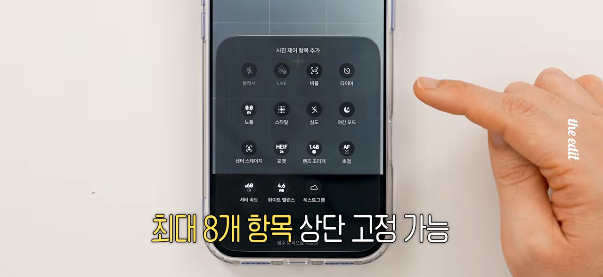
잠금 화면 시계를 작게
잠금 화면을 길게 눌러 사용자화 → 시계를 누르면 서체·색상 옆에 레이아웃 전환 아이콘이 있어요. 이걸 누르면 큰 시계가 날짜 옆 작은 글씨로 바뀌어요. 배경에 둔 사진을 시계가 가리는 게 싫었다면 반가운 변화예요. 진행자 본인은 큰 시계가 더 잘 보여서 그대로 쓴다고 했어요.
리퀴드 글래스 투명도
설정 → 화면 모드 → 리퀴드 글래스에서 슬라이더로 투명도를 맞출 수 있어요. 더 투명하게 하면 글자가 조금 덜 또렷해지지만, 메뉴가 화면을 덮는 답답함이 줄어요. 진행자는 투명한 쪽을 골랐어요.
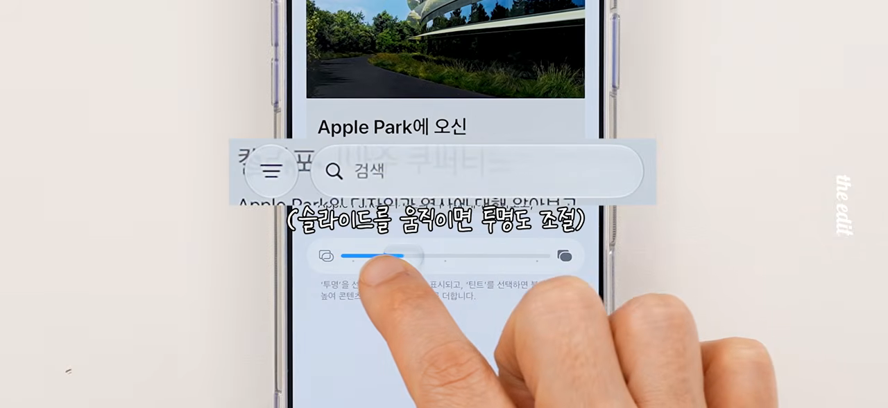
홈 화면을 채우는 초대형 위젯
홈 화면 빈 곳을 길게 누르고 왼쪽 위 편집 버튼 → 위젯 추가로 들어가면, 화면을 거의 다 채우는 크기가 새로 있어요. 캘린더로 넣어 보니 기존에 가장 컸던 대형보다 일정이 훨씬 많이 한눈에 보였어요. 다만 이 크기를 지원하는 앱에서만 고를 수 있어요.
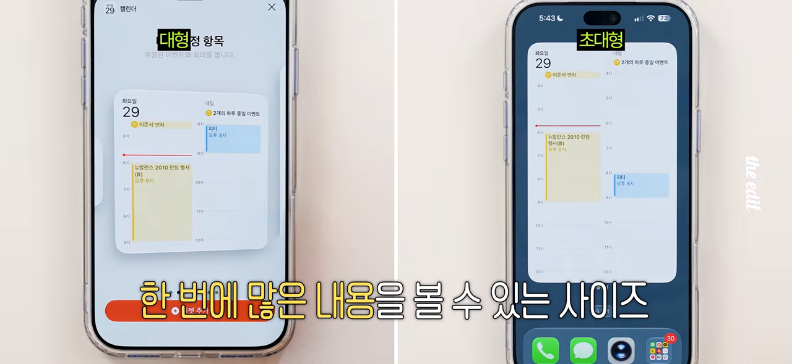
메시지, 에어팟, 음악, 페이스타임
메시지 입력창 옆 버튼 바꾸기
메시지 입력창 오른쪽의 마이크 버튼을 원하는 걸로 바꾸거나 아예 없앨 수 있어요. 설정 → 앱 → 메시지 → 텍스트 필드에 표시에서 고르면 돼요.
| 선택지 | 입력창 옆에 생기는 것 |
|---|---|
| 오디오 녹음 | 누르면 음성 메시지를 녹음하는 버튼 |
| 받아쓰기 시작 | 말한 내용을 글자로 바꿔 주는 받아쓰기 버튼 |
| 안 함 | 아무 버튼도 없음 |
버튼을 없앴더라도 입력창 왼쪽 + → 오디오를 고르면 음성 메시지를 보낼 수 있어요. 진행자는 받아쓰기를 자주 써서 받아쓰기 시작으로 두었어요.
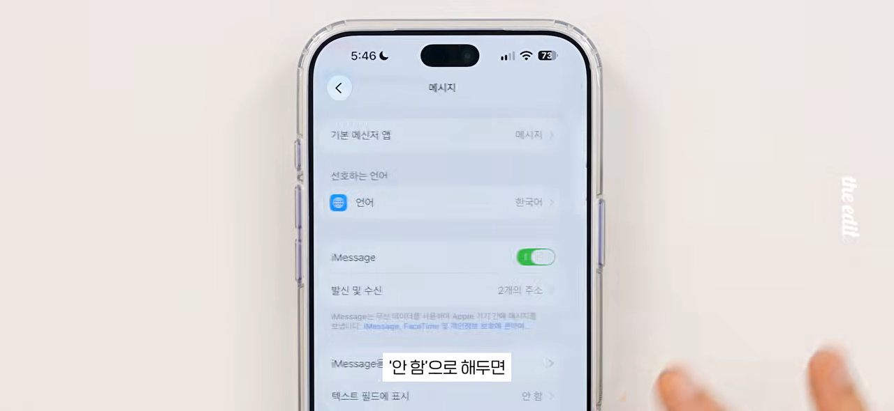
에어팟 저음·중음·고음 조절
에어팟을 끼고 아이폰에 연결한 뒤, 설정 → 내 에어팟 → 오디오 및 라우팅 → 이퀄라이저 → 사용자 설정으로 들어가요. 저음·중음·고음 점 세 개를 위아래로 끌어 소리 성향을 바꿀 수 있어요. 영상에서는 저음과 고음을 올리고 중음을 내려 V자로 만들었어요.
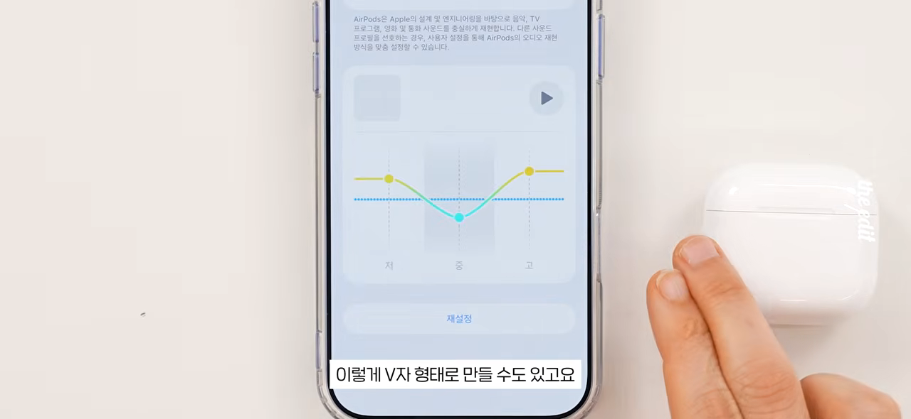
모든 에어팟이 되는 건 아니에요. 펌웨어를 업데이트한 아래 모델만 지원해요.
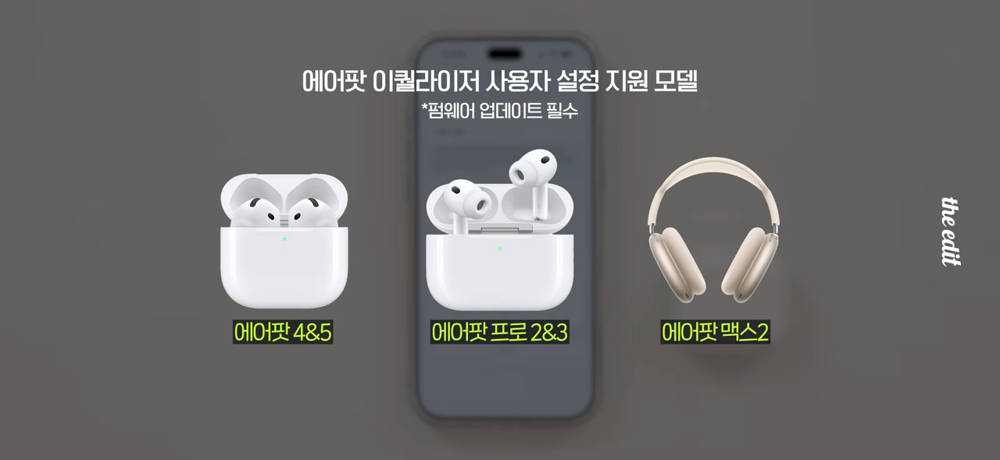
잠금 화면 재생창 지우기
애플 뮤직으로 음악을 들으면 잠금 화면에 재생창이 계속 떠 있었어요. 이제 이걸 왼쪽으로 밀어 지워도 음악은 멈추지 않아요. 재생과 일시 정지는 제어 센터에서 할 수 있어요. 진행자는 굳이 싶은 기능이지만, 잠금 화면을 깔끔하게 두고 싶은 사람에게는 쓸모 있다고 봤어요.
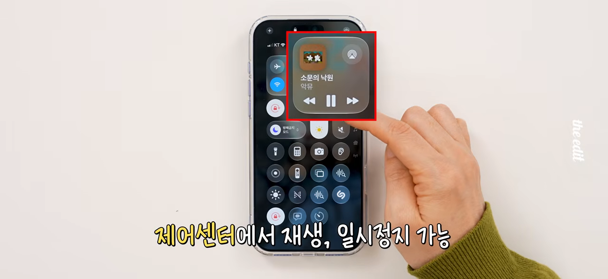
페이스타임에서 얼굴과 앞 풍경을 함께
페이스타임 통화 중 뒤집기 버튼을 누르면 전면 카메라의 내 얼굴과 후면 카메라의 앞 풍경이 한 화면에 함께 나가요. 동영상 촬영의 듀얼 캡처와 비슷한 방식이에요.
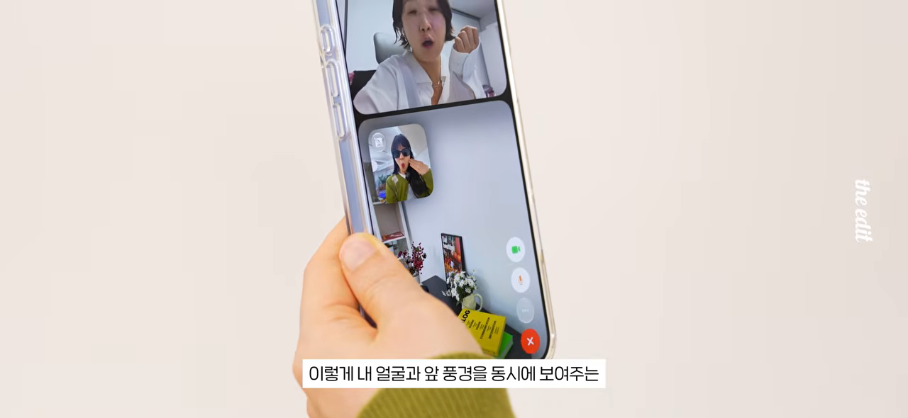
사파리 웹사이트 변경 알림
즐겨 보는 웹사이트에 변화가 생기면 사파리가 알려 줘요. 진행자는 디에디트 웹사이트에 새 글이 올라오면 알림을 받도록 설정했어요.
순서는 이래요. 주소창 왼쪽을 누르고 '알림 받기'를 골라요. 무엇을 확인할지 글로 적어요. 영상에서는 '새 소식이 나오면 알림'이라고 적었어요. 그다음 편집에서 확인 주기와 시간을 정해요. 매일 오전 9시로 정하면 그 시각에 확인해서 새 글이 있을 때 알려 줘요.
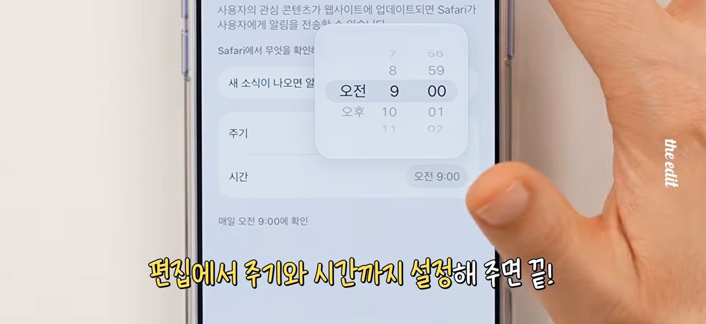
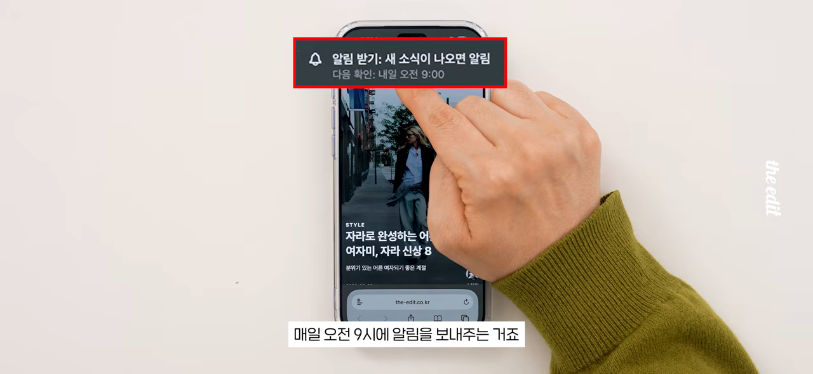
이 기능은 애플 인텔리전스를 쓸 수 있는 아이폰 15 Pro 이상 모델에서만 돼요.